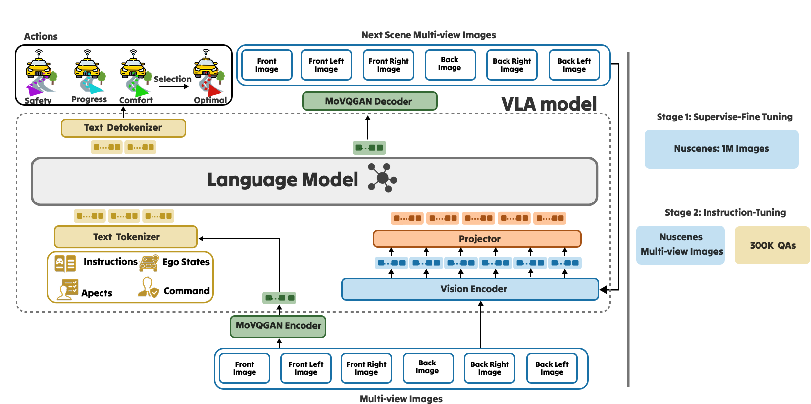
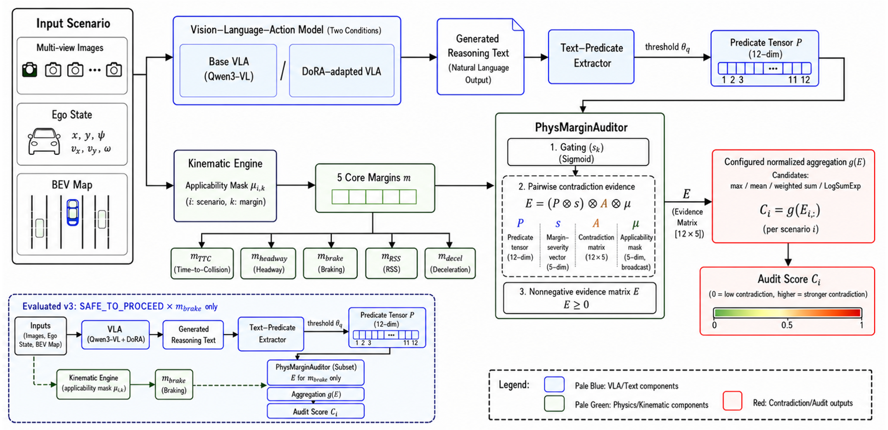
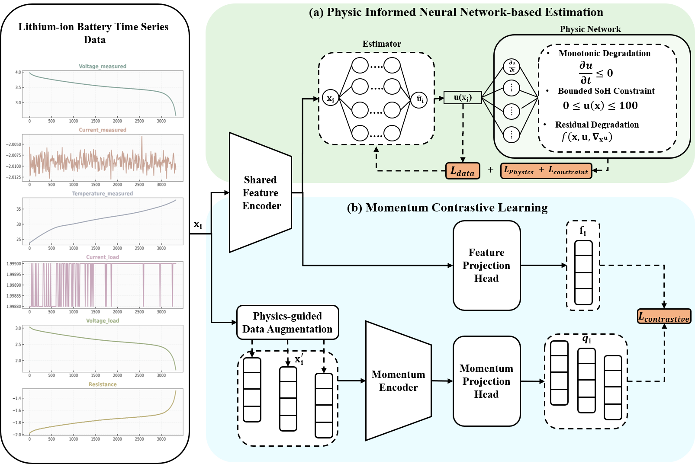

Hi,
I'm
Jiwoo
AI Researcher
Contact
About
I'm Jiwoo Jung
M.S., Department of Computer Science and Artificial
Intelligence, Dongguk University, Seoul.
AI Researcher specializing in Vision-Language-Action
(VLA) models, reasoning–physics consistency auditing,
multimodal AI, and autonomous driving. Published at
CVPR 2026 and in the SCIE Q1 journal
Complex & Intelligent Systems.
Physical-Margin Chain-of-Contradiction
(PhysMargin-CoC)
— Developed a deterministic post-hoc auditing framework
that identifies inconsistencies between action-oriented
VLA reasoning and independently computed physical,
comfort, and behavioral evidence. The framework
evaluates Waymo Open Motion Dataset scenarios using six
signed margins, text-independent applicability masks,
and an inspectable 12 × 6 predicate–margin contradiction
matrix. It also provides pairwise evidence attribution
and paired Base/DoRA model evaluation.
인공지능융합혁신인재양성(IITP/MSIT)
— Designed a Vision-Language-Action pipeline
incorporating inference-time reasoning methods,
including Visual Chain-of-Thought and Tree-of-Thought
evaluation, for autonomous-driving decision analysis.
This work led to publication at
CVPR 2026.
ICAN AI+X Project (IITP/MSIT)
— Developed a Physics-Informed Neural Network combined
with momentum contrastive learning for battery
state-of-health estimation and filed a patent on
AI-driven physical-system monitoring. Published in
Complex & Intelligent Systems.
AI 운전능력평가 표준화사업(KIPoT/경찰청)
— Designed AI-based evaluation metrics and benchmark
scenarios for autonomous-driving capability assessment
and developed a standardized testing pipeline
integrating vision-language models for
driving-behavior analysis.
Skills
Professional Skills
My expertise spans foundational engineering, multimodal reasoning, physical consistency auditing, and state-of-the-art AI model development.
Research & Publications


HybridDriveVLA
Vision-Language-Action model with Visual Chain-of-Thought reasoning and Tree-of-Thought evaluation for autonomous driving.

PhysMargin-CoC
Physical-Margin Chain-of-Contradiction auditing for detecting and attributing reasoning–physics inconsistencies in autonomous-driving Vision-Language-Action models.

Physics-Informed Neural Network
Physics-Informed Neural Network and momentum contrastive learning for battery state-of-health estimation.